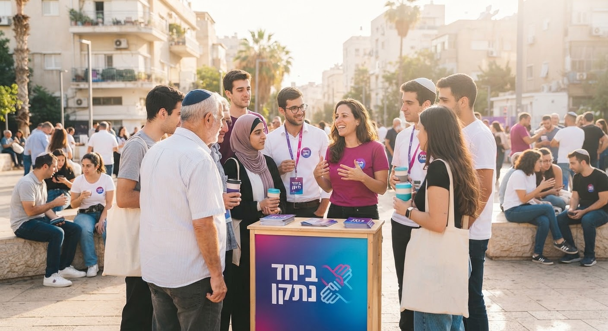

מי אנחנו?
תנועה של צעירים, תלמידים, מחנכים ואזרחים שנמאס להם מסיסמאות ורוצים תוצאות.
התנועה שצומחת מלמטה עם כוח אזרחי אמיתי
נמאס מדיבורים וסיסמאות ברשתות? תנועה אזרחית צעירה ששמה את החינוך, יוקר המחיה והחיבור החברתי במרכז. בועטים בפופוליזם, עושים בשטח.

תנועה של צעירים, תלמידים, מחנכים ואזרחים שנמאס להם מסיסמאות ורוצים תוצאות.
לתקן את מה ששבור במדינה – חינוך מותאם לזמננו, מחירים שפויים, וחברה מאוחדת.
100% שקיפות בזמן אמת, בלי פוליטיקאים משופשפים, בלי עסקנים ובלי אינטרסים זרים.
בלי מגילות ארוכות – הנה בדיוק מה שבאנו לשנות:
למידה אמיתית ורלוונטית למאה ה-21, צמצום עומס הבגרויות, והכנה מעשית לחיים בוגרים.
פירוק מונופולים, בלימת עליות המחירים ויצירת אופק כלכלי ריאלי לדור הצעיר.
עוצרים את ההסתה והשנאה ברשתות, מייצרים שיח אמיתי ומחזירים את הערבות ההדדית.
הצבעה בזמן אמת של הנוער
הקול שלך מכתיב את סדר העדיפויות שלנו. בחר/י עכשיו: